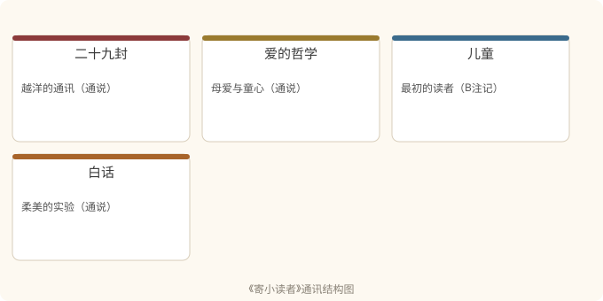

寄小读者
一、基本信息
| 作者 | 冰心 |
|---|---|
| 成书/出版 | 1926年（Britannica：1926——作者页注记） Bingxin — Encyclopaedia Britannica（百科全书） |
| 国别/地区 | 中国 |
| 时代 | 近代 · 20世纪20年代 |
| 体裁 | 通讯散文集 |
| 语言 | 汉语 |

《寄小读者》通讯结构图（主题·结构图）
二、创作背景
作者页注记：寄小读者——'（Britannica：1926）'。
Britannica：冰心——现代中国女作家（作者页语境）。
题材（通说待核）：1923-26赴美通讯——'爱的哲学'与儿童读者。
三、内容脉络
（通说待核）二十九封通讯：从上海到威尔斯利。
（通说待核）'爱的哲学'：母爱、童心与自然。
四、主要人物表
| 人物 | 身份 | 说明 |
|---|---|---|
| '我' | 通讯作者 | （通说待核） |
五、主题与艺术特点
- '爱的哲学'（通说待核）。
- 儿童文学的开创（B注记语境）。
- 白话文的柔美实验（通说待核）。
六、影响与评论
- Britannica：寄小读者 (1926)（作者页注记）。
Bingxin — Encyclopaedia Britannica（百科全书） - Britannica：冰心为中国现代文学代表作家（作者页语境）。
Bingxin — Encyclopaedia Britannica（百科全书）
七、阅读建议
难点
- 通讯体与散文的边界。
- '新文学'早期的语言实验。
- 《寄小读者》（人民文学出版社《冰心全集》等——通说待核）。
- 1926年北新书局说待核。
冰心散文首选；与《繁星》《春水》对读。
八、待核实
- 通讯篇数（二十九封说）核对（通说）。
- 1926年结集细节待核。
- '爱的哲学'提法出处待核。
本页主要来源
相关作品：惩罚集